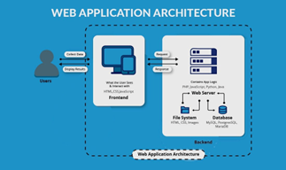

WEB Application architecture
The framework and elements that make it possible for people to engage with a website are referred to as web application architecture. Client-side (web browser), backend (web server), and database server make up its three primary parts. A 2-tier architecture was utilized historically, although 3-tier architectures are increasingly more prevalent. Through a middle application layer, this design separates the client from the database server, enhancing security, scalability, and performance. Three levels make up the architecture of contemporary online applications: the data layer, the client-side presentation layer, and the application layer's business logic layer. For expansion, dependability, and future IT requirements, the correct architecture must be chosen.

The essential elements of web application architecture are as follows:
- Presentation Layer: This layer focuses on the user interface (UI) and user experience (UX) aspects of the application. It includes HTML, CSS, JavaScript, and frameworks like React, Angular, or Vue.js to create dynamic and interactive UIs.
- Application layer: This layer, also referred to as the business logic layer, manages the essential operations of the program. It includes frameworks like Django, Spring, Ruby on Rails, or Laravel as well as server-side programming languages like Python, Java, Ruby, or PHP. This layer handles user requests, validates data, and interacts with other layers.
- Data Layer: This layer controls how data is stored and retrieved. A database system like MySQL, PostgreSQL, MongoDB, or Redis is frequently used. Database interaction is facilitated by Object-Relational Mapping (ORM) libraries like Hibernate, SQLAlchemy, or Active Record. The data layer guarantees data integrity, security, and quick access to data.
- Integration layer: Communication between various application components and outside services is made possible by this layer. It consists of APIs (Application Programming Interfaces) that permit data sharing and interaction with external services like chat platforms, payment gateways, and social media sites. GraphQL and REST (Representational State Transfer) are two widely used API technologies.
- Infrastructure layer: The web application's hosting environment and underlying infrastructure are included in this layer. In addition to cloud services like Amazon Web Services (AWS), Microsoft Azure, or Google Cloud Platform (GCP), it also comprises servers, operating systems, load balancers, networking components, and other hardware. Web application hosting companies that offer infrastructure as a service (IaaS) and platform as a service (PaaS) provide scalable and dependable infrastructure.
- Security layer: This layer focuses on guarding against numerous security risks to the online application, like cross-site scripting (XSS), cross-site request forgery (CSRF), SQL injection, or unauthorized access. It entails putting security precautions in place including HTTPS, authentication, authorization, encryption, and frequent security audits.
- Scalability and Performance: The architecture of web applications should be built to support heavy traffic loads and guarantee top performance. To increase scalability and decrease response times, strategies like load balancing, caching, content delivery networks (CDNs), and database optimization are used.
Depending on the requirements of the application, the technology stack selected, and the project's size, web application architecture can change. A scalable, secure, and maintainable architecture that satisfies the requirements of the program and its users is essential.